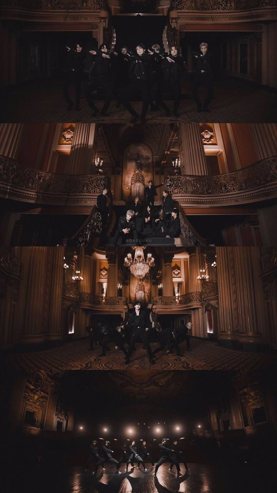
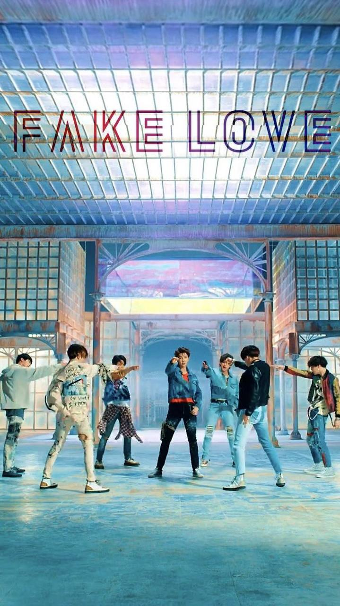
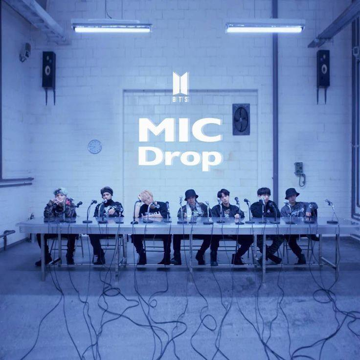

My Favorite Songs

Black Swan
This song hits me deeply with its instruments and performance

Fake Love
I like the mellow melody and how the vocals blend perfectly.

Mic Drop
This song makes me feel energized and happy every time I listen.

Save me
The one reminds me of their other songs called fine and its a song that makes you miss someone.